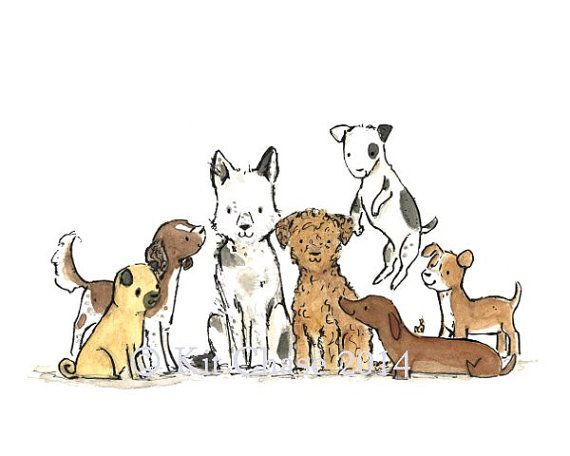

¡Bienvenidos a Huellitas Comunitarias!
Este proyecto escolar busca crear conciencia sobre el cuidado de los animales de nuestra comunidad, especialmente aquellos que viven en situación de calle.

Por una comunidad que los cuide
Queremos fomentar el respeto hacia los animales y compartir información que ayude a mejorar sus condiciones de vida. También buscamos motivar a las personas a participar en acciones de apoyo y protección.
¡Todos podemos hacer la diferencia!
Explora nuestras páginas para conocer las historias de los animalitos y descubrir cómo puedes contribuir a esta causa.